|
|
home
computing : games & art : research sitemap |
I spent the last weeks super busy studying. I had tons of exams to sit for and reports to write, so I spent most of my time secluded and buried over mountains of digital paperwork. I, nevertheless, took some time out of each day to write a minimal log entry to remember what I had done. This entry is a collection, an anthology of sorts, of all the interesting things I've done over the past two to three weeks.
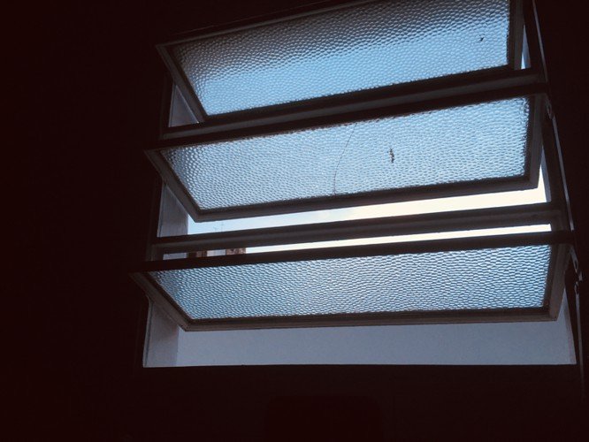— G16V09 (JPEG) - view original (2362 KiB, JPG)
Before we start, some technical details. I have created my own date notation. I've been using it for all my projects and notes, I find it really convenient1 and easy to use. I use it in Excal, I've used it in my diary entries, I use it when creating documents and folders and so I'll be using it here too. Mostly due to the fact that I have logged each day using this very notation.
It goes like this: all dates consist of five characters. Two digits for the date number. A digit for the month. Two digits for the year. Today is 17J21, June 17, 2021. If the month letter is in UPPERCASE, then the year is in the 2000s. In this case, 2000 + 21 = 2021. If the letter is in lowercase, then the year is in the 1900s, in case I need to talk about the year I was born or something. I don't really care much about noting dates of any other century, but the system allows for other centuries if desired. First, each month is represented by a letter. The letters used come from the name of the month in Spanish.
23s95 is September 23, 1995. 21E05 is January 21, 2005. Etc. Any letters not used here (or characters or whatever) could be used to write down dates from other centuries. Maybe 13#45 could mean April 13, 1845. I don't really care much. Feel free to extend the system.
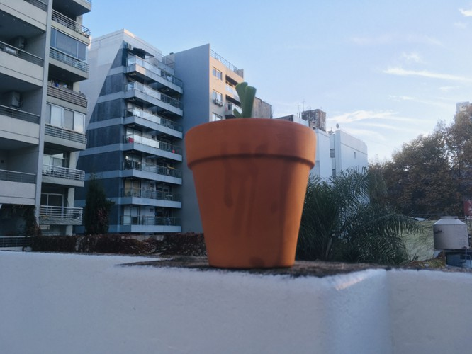— C47T33 (JPEG) - view original (2222 KiB, JPG)
I ate some hotcakes. The leek is growing in its pot. I also took some pictures.
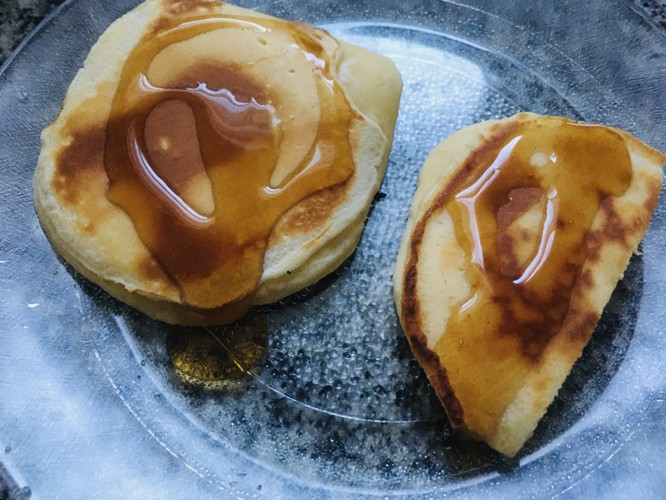— O37D65 (JPEG) - view original (2808 KiB, JPG)
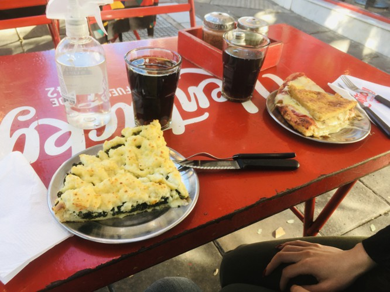— P12R86 (JPEG) - view original (2098 KiB, JPG)
We went out and ate some pizza. I mixed the order up when ordering and I ended up eating some vegetable pizza with white sauce. It was nice to try something new, I liked it. My parents videocalled us while we were out, so we had a little chat al fresco. That was quite fun. I also celebrated 10 years on Twitter, although I have probably activelly used the social network less than half of that time. I developed Excal to keep track of my expenses (I used to use a giant spreadsheet, but I was getting tired of it and I needed something I could scale even further). This day I also spent the night up making sense of my expenses. In the end, though, everything was okay, but now I know what I waste money on and how much I have left (in average) each month, so I can spend more consciously.
I had a call with Tejo to define some aspects of the Eterspire animation system – which was a mess until he reworked it –, and watched a lot of The Nightmare Before Christmas clips. I loved that movie as a child, I didn't remember how much.
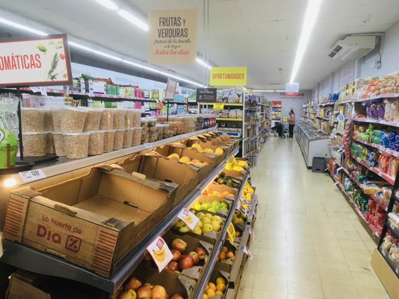— U43G13 (JPEG) - view original (2624 KiB, JPG)
We went to the supermarket to stock ourselves for the next weeks, but my shoulder was in terrible pain so we just bought things for the week. We bought some jalapenos and I cooked an amazing spicy pomarola sauce. I also bought a very tasty caesar salad wrap. It was my grandma's birthday, so I called her and we spent a while talking. She had had some health issues during the first half of the year, but she's doing better now, so that's both great news and a relief. It makes me really happy. The rest of the day was spent studying.
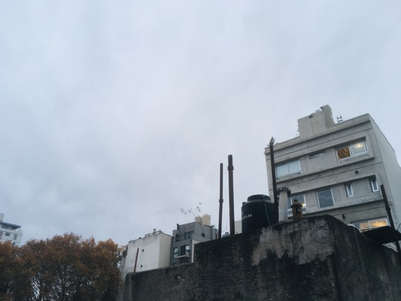— N14A28 (JPEG) - view original (1608 KiB, JPG)
This day was also spent studying. I tried to organize my study around pomodoro timers, and I failed catastrophically at that. For the last days I've been experimenting with biphasic sleeping and adjusting to the new sleep patterns kept me quite drowzy. Nevertheless, at night – and specially between sleep periods – I could concentrate very easily.
I did have a hard time sleeping, though. My shoulder hurt like crazy.
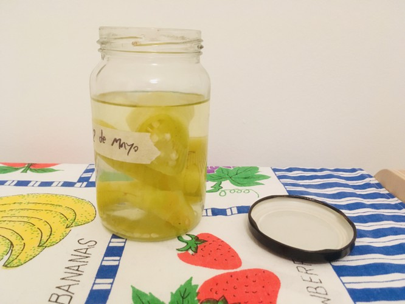— R06L85 (JPEG) - view original (1626 KiB, JPG)
The pickles I had made about a week or so ago were ready, so we opened them. They turned out great, delicious. I had also pickled some onion, but we didn't try those yet.
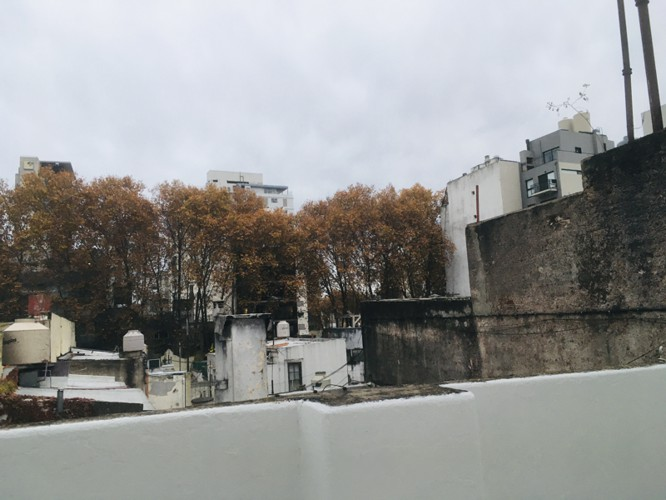— O82J20 (JPEG) - view original (2313 KiB, JPG)
I spent the better part of the day studying. Again. My shoulder kept hurting. At one point I couldn't tolerate it anymore and went to the hospital. My arm ended up in a cast and they gave me some painkillers.
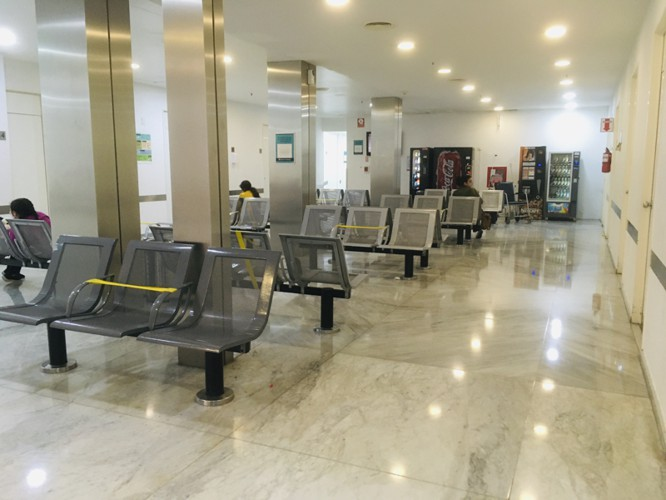— V62J96 (JPEG) - view original (1737 KiB, JPG)
I cooked some patties with salad and pepper pickles. Sleeping with my shoulder like that was hard.
This night I had a weird dream. I was living in a Roblox-Lego-like world, and I had built a train and a plastic-flower garden. There, I met The Architect, an old supervillain with a green and purple leotard that could fly and had the power of creating branching buildings out of nowhere, that grew and twirled like vines. He had a mental-wave gun. When he shot me with it, I woke up.
During the rest of the night I drank some canned wine. I had never tried it. It was really nice. I also spent some time crawling the indienet, the independant internet of personal websites. I jumped from ƒdisk to nchrs.xyz, and there I found two marvellous stories: A Thousand Marbles and The Egg. Both are quite short. Very recommended readings. I also found Lieu, a search engine for the Merveilles webring. I had been thinking about developing something like that for the indienet for sometime now, so coming across it was super cool.
I really like the concept of webrings and personal websites. The lartunet is part of the Low Tech Webring. I may create my own webring in the future. That'd be very nice, but for now, I kept exploring what Merveilles had to offer. It has some amazing people with amazing websites.
This whole cyber-adventure took me to the Low Tech Magazine, a website that runs on solar power alone. I also found this list of digital gardens. I haven't had the time to check it thoroughly yet, be my guest at that.
What I like about most indienet websites I've found is that they are quite enriching. Their content is really something else. Personal photos, ideas, stories; it's like hopping inside their owners' heads. Unlike most mainstream websites out there, I feel that when I visit one of these sites I leave with more than I had when I entered. It's a very positive experience.
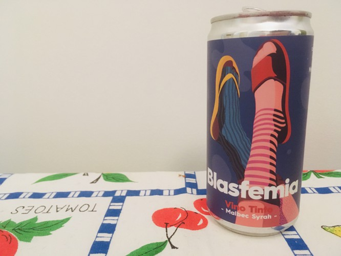— E96G81 (JPEG) - view original (1641 KiB, JPG)
I also read a Solarpunk Manifesto. There are others out there, apparently, too. This article about Low Tech Offices was also very interesting.
Finally, I spent some time thinking about the things I learned this week. I learned about Bash scripting, about configuring iptables, about freedom of press and expression in Latin America (and, in particular, in Argentina). I wrote some code in LDPL, after a year or more of not doing so. It's clunky. In some ways it's like C. You have to reinvent the wheel every time you want to do something, or do it frequently enough to have your own set of libraries and tools already reinvented. These are not languages built to make stuff fast that breaks fast. They are designed to write stable code that works well. It takes longer, but the result does what it has to do. It's stable, solid and efficient. Maybe that's what's beautiful about them.
Today I had a law test. I passed it with a wonderful grade. I had studied much more than it was needed, really, but I would be lying if I said I didn't enjoy somewhat what I was studying.
To celebrate, I went to McDonald's and had some McNuggets. McDonald's is not precisely cheap here, quite on the contrary. It's much cheaper to buy fresh begetables and meat. I was so hungry I didn't take any pictures, but the day was gray and cold and lovely. For dinner, I had boiled carrots and potatoes. Super tasty.
I bought a new bluetooth mouse that can be connected to two computers at the same time and switch between them with the click of a button. I work with two computers at the same time, so I needed something like this.
My shoulder's a little better. I can take the cast off now and then, but it still hurts. Sleeping without it is impossible.
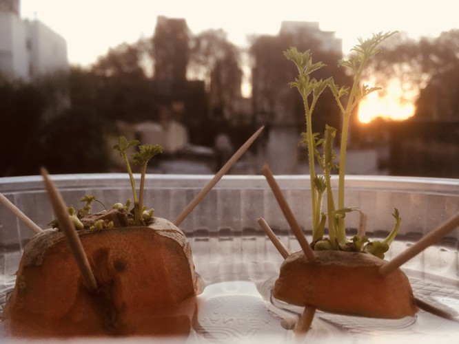
Some days before I had begun growing some carrots. By this day, they had already grown tiny leaves. My minuscule orange islands.
The rest of the day was spent studying.
I still have eleven days to talk about, but I think I will split this entry here because it's getting way too long and I have some more immediate things to do. I will be back with another anthology entry soon enough. Thank you for reading!
(1) Except when used in filenames. The letters chosen for the months mix up the order of the files.